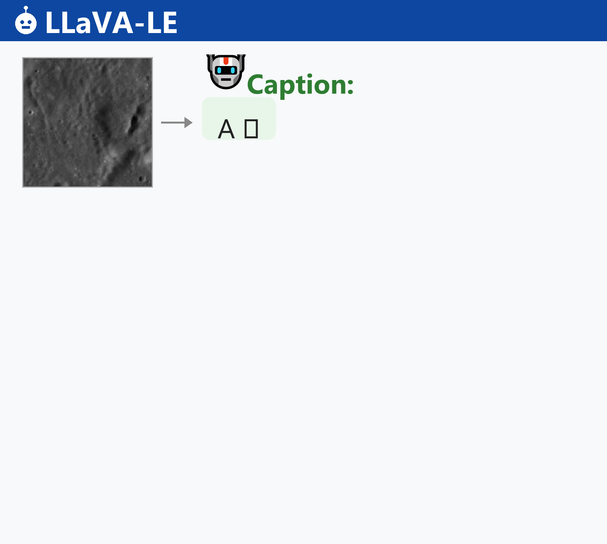

What if an AI could look at the Moon and actually understand what it sees? LLaVA-LE is the first vision-language model trained on real NASA lunar data — not simulations, not synthetic renders, but actual imagery from orbiting spacecraft. Paired with LUCID, the largest real multimodal lunar dataset ever assembled, it can describe surface geology, answer scientific questions, and reason about terrain like a trained geologist.
Explore the Moon
Interact with NASA's 3D Moon model below — zoom, rotate, and explore the lunar surface that LLaVA-LE was trained to understand.
Loading 3D Moon model...
Key Contributions
LLaVA-LE Model
A domain-adapted vision-language model specialized for lunar surface and subsurface analysis, built on LLaVA-v1.5-13B with parameter-efficient LoRA fine-tuning.
LUCID Dataset
The first large-scale real multimodal lunar dataset: 96K panchromatic images with scientific captions and 81K QA pairs, sourced from LROC, GRAIL, and LOLA mission data.
Geophysically Grounded
Captions are generated using co-registered panchromatic imagery, gravity anomaly maps, and terrain slope data — grounding language in multi-modal geophysical context.
Novelty
LLaVA-LE Model
LLaVA-LE is the first vision-language model specifically adapted for lunar science using real observational data. Unlike general-purpose VLMs that lack planetary domain knowledge, or prior work like Space-LLaVA that relied on synthetic imagery and withheld its resources, LLaVA-LE is trained through a two-stage curriculum — concept alignment followed by instruction tuning — that teaches the model to reason about surface geology, crater morphology, and terrain properties in scientifically grounded language.
LUCID Dataset
Prior lunar datasets were unimodal, small-scale, or synthetic. LUCID is constructed from actual NASA mission products — LROC panchromatic imagery, GRAIL gravity data, and LOLA slope maps. Captions are generated via GPT-5.1 using structured prompts that incorporate all three modalities, so text descriptions are grounded in geophysical context rather than just visual appearance. This represents the first publicly available dataset for multimodal vision-language training on real planetary observations.
Methodology
LLaVA-LE follows a two-stage curriculum built on LLaVA-v1.5-13B. The CLIP vision encoder and base LLM remain frozen; only a trainable projection layer and lightweight LoRA modules are updated.
Model Demo
LLaVA-LE generates scientifically grounded captions and answers multi-turn questions about lunar surface features:

LLaVA-LE autoregressively generates scientifically grounded captions and answers multi-turn geological questions across diverse lunar terrains.
Note: The text generation speed shown is for demonstration purposes only and does not reflect the actual inference speed of LLaVA-LE.
Results
Evaluated on a held-out benchmark of 190 questions across three categories (Detailed, Conversational, Reasoning), scored by both GPT and Gemini judges.
Performance Comparison (Relative Score)
Key Findings
| Metric | Value |
|---|---|
| Overall improvement over base LLaVA | 3.3x |
| Improvement over Stage 1 alone | 2.1x |
| Reasoning score (vs. judge reference) | 1.070 (exceeds judges) |
| Largest gain category | Reasoning |
| Evaluation benchmark size | 50 images, 190 questions |
LUCID Dataset
LUCID (Lunar Captioned Image Dataset) is the first large-scale real multimodal lunar dataset for vision-language training. All images are 224×224 px panchromatic patches at 125 m/px, each covering ~784 km² of the lunar surface.
What's in the Dataset
LUCID contains three components: the first provides lunar images paired with scientifically grounded captions describing surface geology, crater morphology, and terrain properties; the second extends a subset of images with multi-turn conversational question-answer dialogues covering spatial reasoning, geomorphological analysis, and formation processes; and the third is a held-out evaluation benchmark with categorized questions for measuring model performance across detailed description, conversation, and reasoning tasks.
You can access the dataset on the LUCID HuggingFace Dataset🤗.
Stage 1: Image Captioning Samples
Each sample pairs a panchromatic lunar patch with a geophysically-grounded scientific caption:
Stage 2: Multi-Turn QA Samples
Instruction-tuning data transforms captions into conversational QA dialogues (3–5 turns per image):